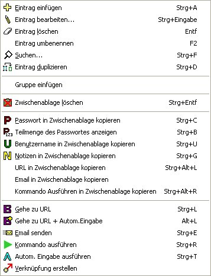
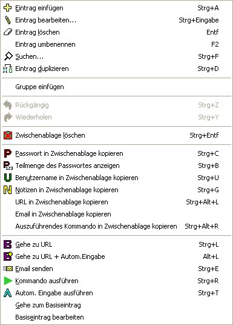
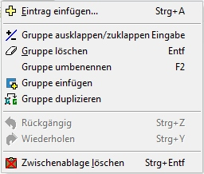
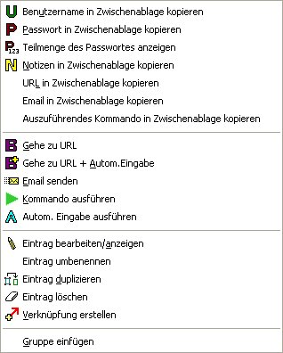
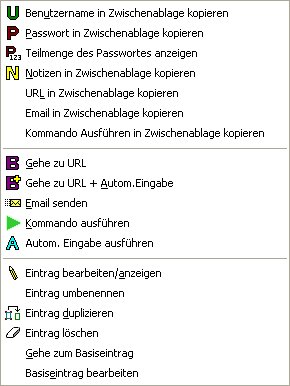
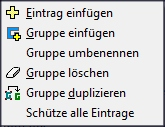

angedeutet und hat standardmäßig den Namen "Verküpfung mit x", wo x der Name des originalen Eintrages ist. Natürlich kann diese Verknüpfung bearbeitet, gelöscht oder verschoben werden, wie jeder normaler Eintrag auch.
angedeutet und hat standardmäßig den Namen "Verküpfung mit x", wo x der Name des originalen Eintrages ist. Natürlich kann diese Verknüpfung bearbeitet, gelöscht oder verschoben werden, wie jeder normaler Eintrag auch.| Eintrag | Alias | Gruppe | ||
|  |  |  |
Im Menü Bearbeiten können Benutzernamen und Passwörter eingefügt, bearbeitet, angewendet und organisiert werden. Beachten Sie dass die Menü-Inhalte sich in Funktion von dem was in der Hauptanzeige ausgewählt ist, ändern können (z.B. wenn Sie einen Eintrag oder eine Gruppe ausgewählt haben). Es könnten auch einige Elemente deaktiviert sein, wie weiter unten erwähnt.
Benutzernamen und Passwort werden eingefügt. Dies ist deaktiviert, wenn eine Datenbank in NUR-Lesen Modus geöffnet ist.
Siehe Benutzernamen, Passwörter und Gruppen für mehr Information.
Wenn ein Eintrag ausgewählt ist, den ausgewählten Benutzernamen und Passwort bearbeiten. Wenn eine Gruppe ausgewählt ist (in Baumdarstellung), wird dies die Einträge der ausgewählten Gruppe aus- bzw. zuklappen. Das Bearbeiten eines Eintrages ist deaktiviert, wenn eine Datenbank in NUR-Lesen Modus geöffnet ist.
Siehe Benutzernamen, Passwörter und Gruppen für mehr Information.
Wenn ein Eintrag ausgewählt ist, wird dieser Eintrag gelöscht. Wenn eine Gruppe ausgewählt ist (in Baumdarstellung), wird diese Gruppe mit allen sich darin befindlichen Einträgen gelöscht. Dies muss bestätigt werden, wenn mehr als ein Eintrag in der ausgewählten Gruppe vorhanden ist. Dies ist deaktiviert, wenn eine Datenbank in NUR-Lesen Modus geöffnet ist.
Der ausgewählte Eintrag wird umbenannt (oder Gruppe, in Baumdarstellung). Dies ist deaktiviert, wenn eine Datenbank in NUR-Lesen Modus geöffnet ist.
Suche nach einem gegebenen Text in den Einträgen. Standardmäßig werden alle Felder durchsucht, mit Ausnahme der Passwörter.
Siehe Suchen für mehr Information.
Der ausgewählte Eintrag wird dupliziert. Dies ist deaktiviert, wenn eine Datenbank in NUR-Lesen Modus geöffnet ist.
Es wird eine neue Passwortgruppe eingerichtet (z.B. Bank Passwörter). Dies ist deaktiviert, wenn eine Datenbank in NUR-Lesen Modus geöffnet ist.
Die zuletzt ausgeführte Aktion wird rückgängig gemacht.
Die zuletzt rückgängig gemachte Aktion wird wiederhergestellt.
Löscht die Zwischenablage. Dies löscht in der Zwischenablage nur die Sachen, die von Password Safe (Passwort, Benutzername, Notizen, usw.) stammen. Wenn der momentane Inhalt in der Zwischenablage nicht von Password Safe stammt, dann passiert damit nichts.
Kopiert das Passwort vom ausgewählten Eintrag in die Zwischenablage.
Im oberen Feld des Dialoges können Sie die Positionen der Zeichen im Passwort eingeben, die sie für die Teilmenge des Passwortes benötigen. Als Trennzeichen dient das Leerzeichen, das Komma oder der Strichpunkt. Im unteren Feld werden die Zeichen, die mit den Positionen übereinstimmen, angezeigt. Aus diesem Dialog kehren sie mit Esc zurück.
Kopiert den Benutzernamen vom ausgewählten Eintrag in die Zwischenablage.
Kopiert den Inhalt der Notizen vom ausgewählten Eintrag in die Zwischenablage.
Kopiert die URL des ausgewählten Eintrages in die Zwischenablage.
Kopiert die Email Adresse des ausgewählten Eintrages in die Zwischenablage.
Kopiert das auszuführende Kommando des ausgewählten Eintrages in die Zwischenablage.
Wenn ein Eintrag ausgewählt ist, und es ist eine URL mit diesem Eintrag verbunden, dann wird der standardmäßige Browser mit dieser URL aufgerufen. Wenn kein Eintrag ausgewählt ist, oder es ist keine URL mit diesem Eintrag verbunden, dann ist dieser Menüpunkt deaktiviert.
Wenn ein Eintrag ausgewählt ist, und es ist eine URL mit diesem Eintrag verbunden, dann wird der standardmäßige Browser mit dieser URL aufgerufen.
Wenn kein Eintrag ausgewählt ist, oder es ist keine URL mit diesem Eintrag verbunden, dann ist dieser Menüpunkt deaktiviert.
Benutzername und Passwort werden ebenfalls automatisch in das ausgewählte Eingabeformular eingefügt.
Siehe Autom. Eingabe anwenden für mehr Information.
Eine Email an die Email-Adresse des ausgewählten Eintrages wird vorbereitet.
Benutzername und Passwort werden automatisch in das ausgewählte Eingabeformular eingefügt.
Siehe Autom. Eingabe anwenden für mehr Information.
Mit dieser Auswahl führen sie das Kommando, welches im Feld Ausführen eines Eintrages enthalten ist, aus. Siehe String ausführen für mehr Information.
Wenn ein Eintrag ausgewählt ist, erstellen Sie hiermit eine Verknüpfung zu diesem Eintrag; typischerweise angewendet in einer Gruppe. Dies ist dann nützlich, wenn einen Eintrag zu mehreren Gruppen gehören soll, ohne dass Sie die Daten duplizieren müssen. Diese Verknüpfung wird durch ein gesondertes Symbol angedeutet und hat standardmäßig den Namen "Verküpfung mit x", wo x der Name des originalen Eintrages ist. Natürlich kann diese Verknüpfung bearbeitet, gelöscht oder verschoben werden, wie jeder normaler Eintrag auch.
Dieser Punkt kommt nur dann vor, wenn Sie ein verknüpfter Eintrag oder ein Alias-Eintrag anklicken. Nach einem Klick auf Gehe zum Basiseintrag wird der Basiseintrag, der zu diesem Eintrag gehört, ausgewählt.
Dieser Punkt kommt nur dann vor, wenn Sie ein verknüpfter Eintrag oder ein Alias-Eintrag anklicken. Nach einem Klick auf Basiseintrag bearbeiten kann der Basiseintrag, der zu diesem verknüpften oder Alias-Eintrag gehört, bearbeitet werden.
Der ausgewählte Eintrag wird als Text exportiert. Vorerst werden Sie aufgefordert das Master-Passwort als Bestätigung, dass Sie ein Element aus der Datenbank in eine unverschlüsselte reine Textdatei exportieren möchten, einzugeben.
Siehe auch Einträge exportieren für mehr Information.
Der ausgewählte Eintrag wird als XML exportiert. Vorerst werden Sie aufgefordert das Master-Passwort als Bestätigung, dass Sie ein Element aus der Datenbank in eine unverschlüsselte reine Textdatei exportieren möchten, einzugeben.
Siehe auch Einträge exportieren für mehr Information.
Der Eintrag bzw. alle Einträge werden geschützt vor jegliche Änderung. Geschützte Einträge sind mit einem '#' gekennzeichnet.
Fast alle Punkte im Menü Bearbeiten können auch mit einem rechten Mausklick auf den entsprechenden Eintrag, Alias bzw. Gruppe erreicht werden.
| Eintrag | Alias | Gruppe | ||
|  |  |  |
All diese Menüpunkte sind im Kapitel Menü Bearbeiten oben abgehandelt worden.